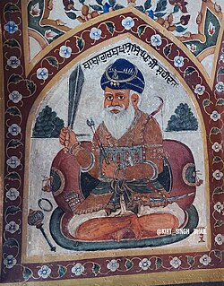
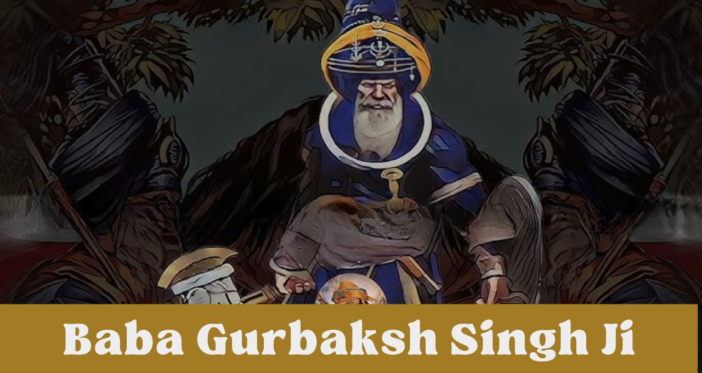

Who Was Baba Gurbaksh Singh Ji?
Baba Gurbaksh Singh Ji was a courageous Sikh warrior known for his heroic role in the Battle of Chamkaur Sahib in 1704. He sacrificed his life defending the Sikh values and the last stand of Guru Gobind Singh Ji’s forces against overwhelming Mughal armies.

Early Life and Background
Little is known about his early years, but Baba Gurbaksh Singh Ji was recognized as a devoted and fearless warrior who belonged to a family deeply rooted in Sikh traditions. He was closely associated with the Sikh army and stood firm alongside other Sikh martyrs in the defense of their faith.

Role in the Battle of Chamkaur
During the famous Battle of Chamkaur Sahib, Baba Gurbaksh Singh Ji was among the small band of Sikh warriors who bravely resisted the large Mughal forces. Despite facing severe odds, he fought with unmatched valor until he was martyred defending Guru Gobind Singh Ji and his companions.

Legacy and Remembrance
Baba Gurbaksh Singh Ji’s sacrifice is remembered as a shining example of bravery, loyalty, and steadfastness in Sikh history. His role in the Battle of Chamkaur Sahib continues to inspire Sikhs around the world to uphold the principles of courage and selflessness.
Back